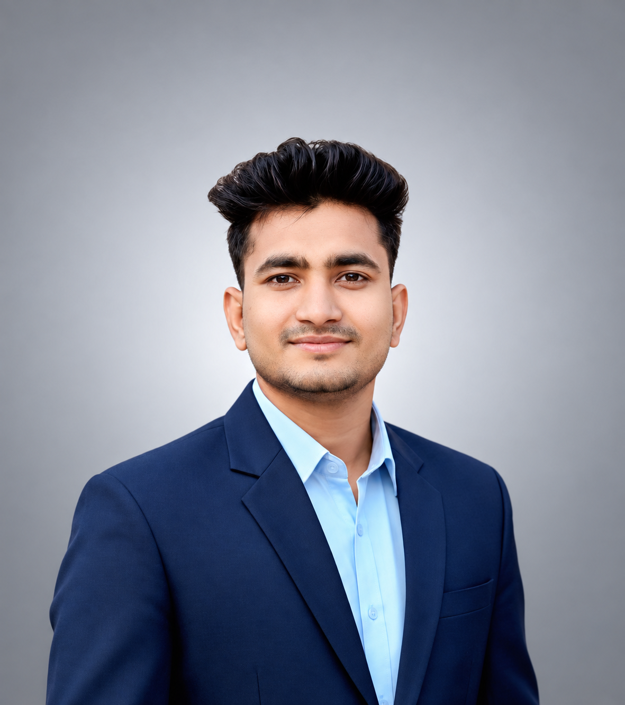

4+
Years of experience
Hands-on work across marketing, SEO, social media and lead generation.
I'm Md Ariful Islam, a digital marketing professional with 4 years of experience.

I am a digital marketing expert helping businesses grow through SEO, social media management and marketing, Facebook Ads, and lead generation.
I use practical strategies to increase online visibility, reach the right audience, and generate real business opportunities.
My work also includes e-commerce support and website development services.
Hands-on work across marketing, SEO, social media and lead generation.
Focused on strategies that support business goals and the right audience.